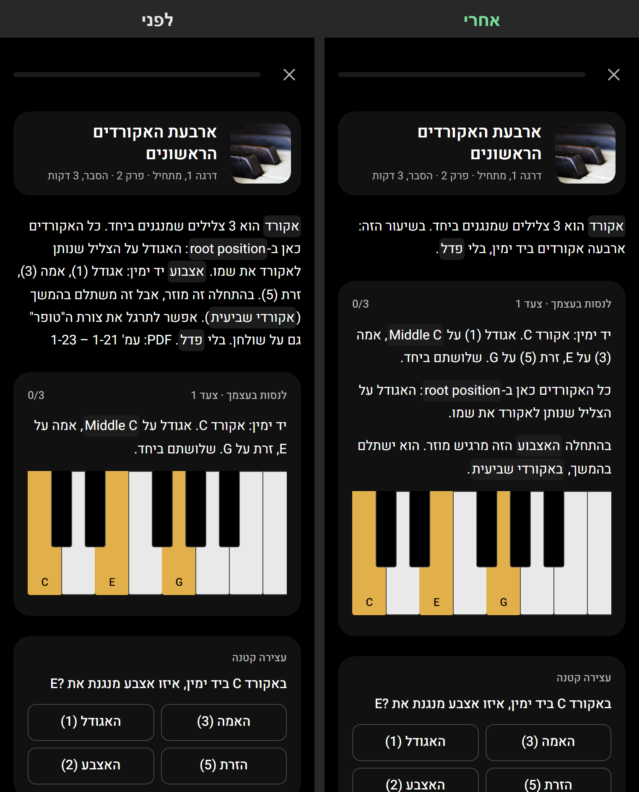
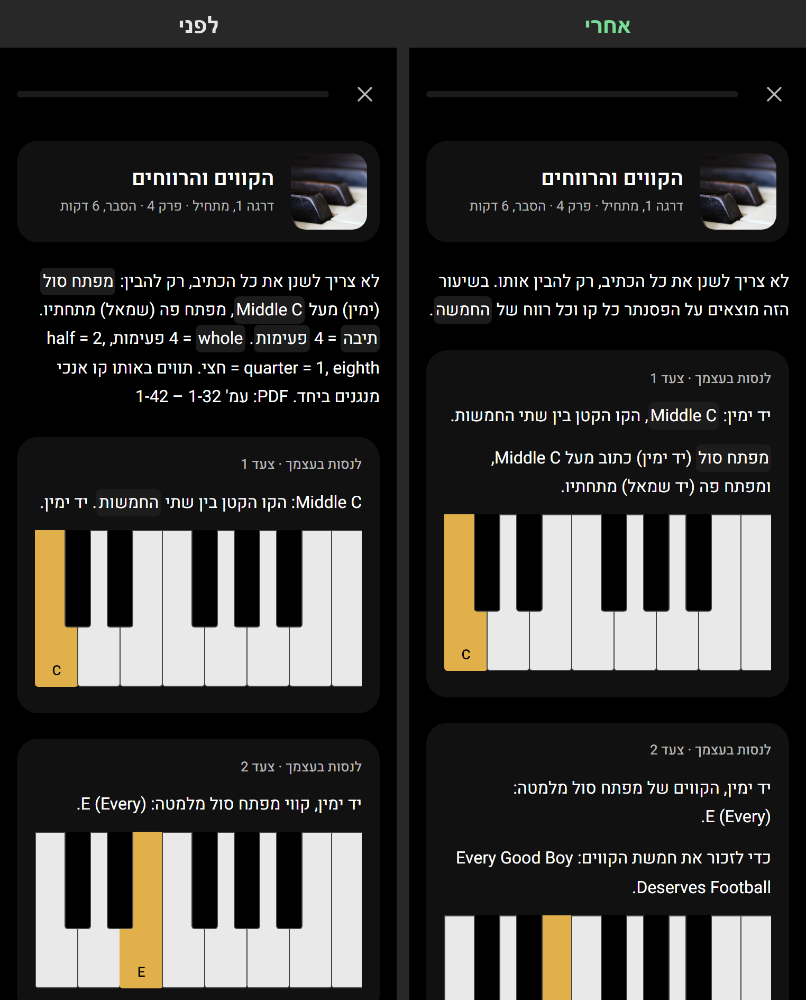
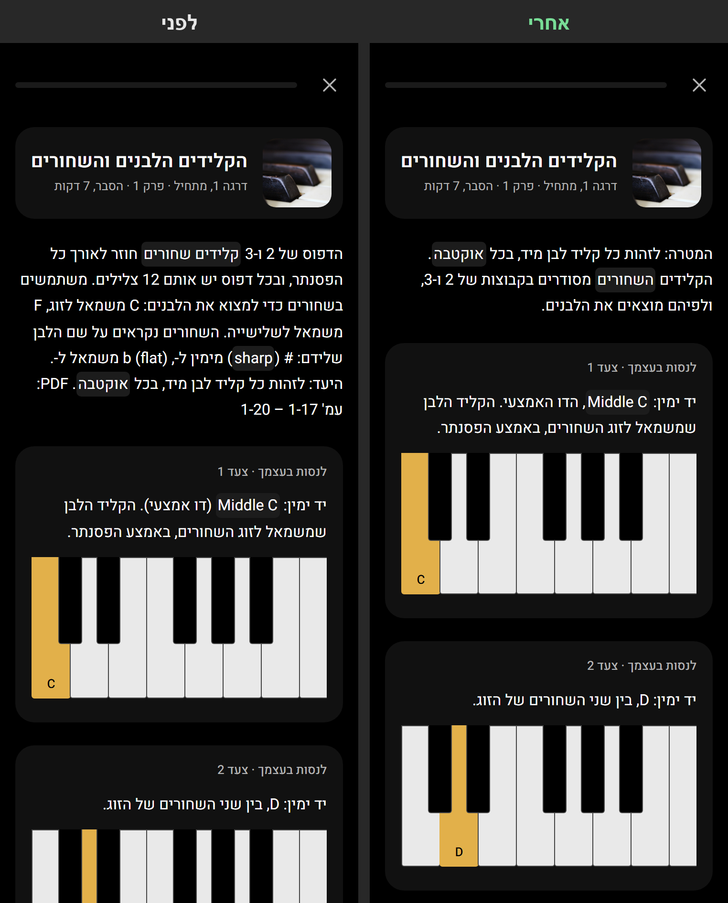
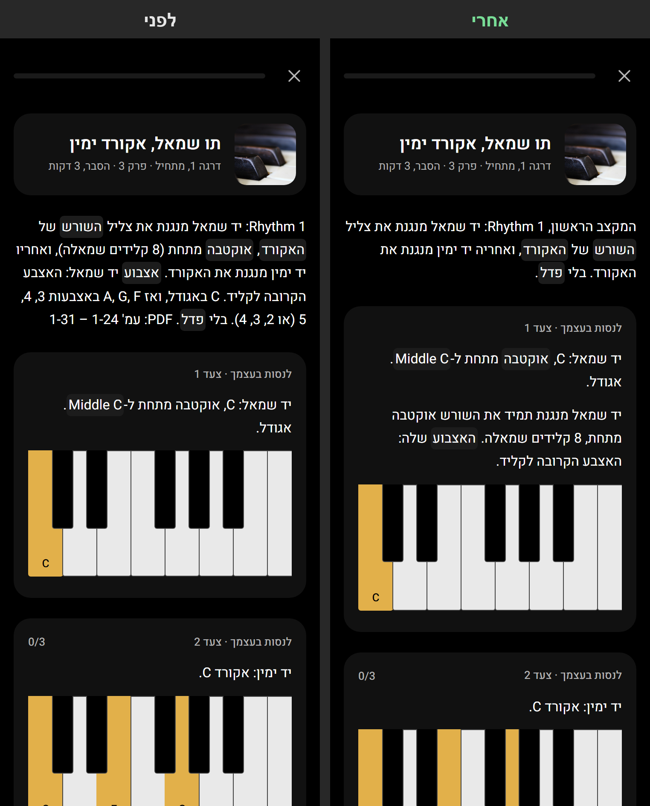
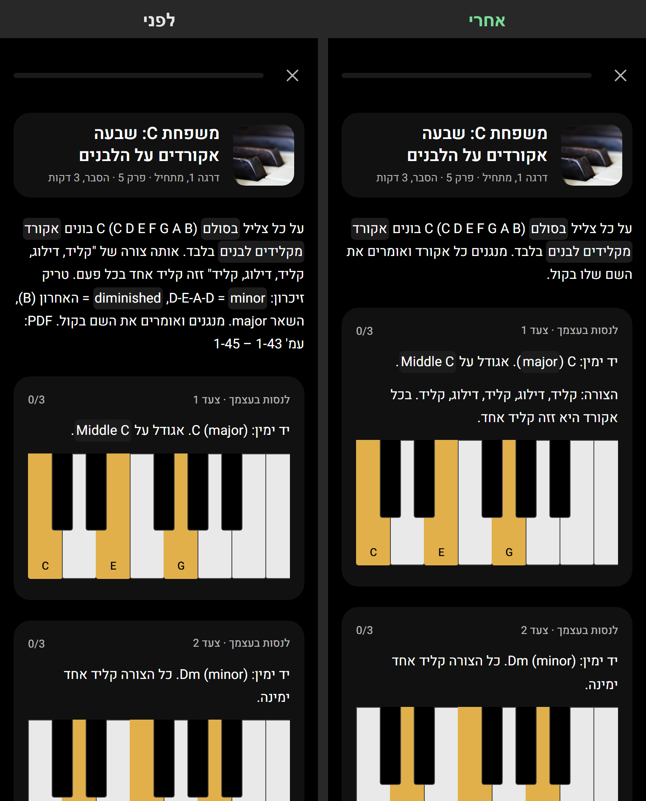
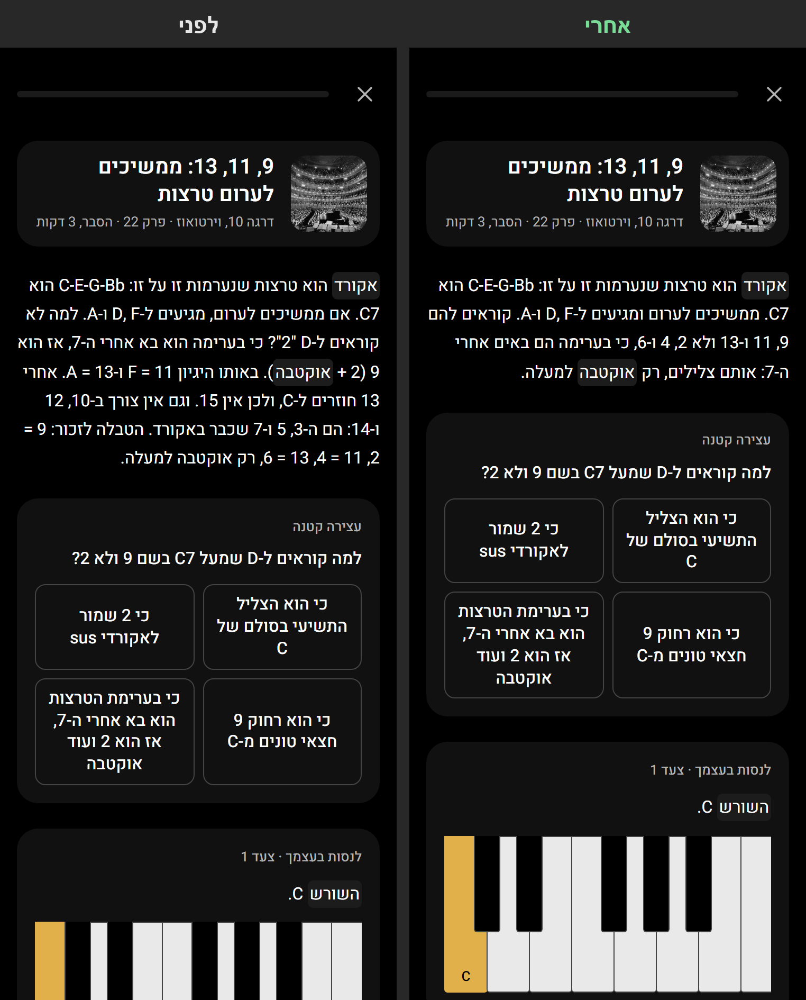
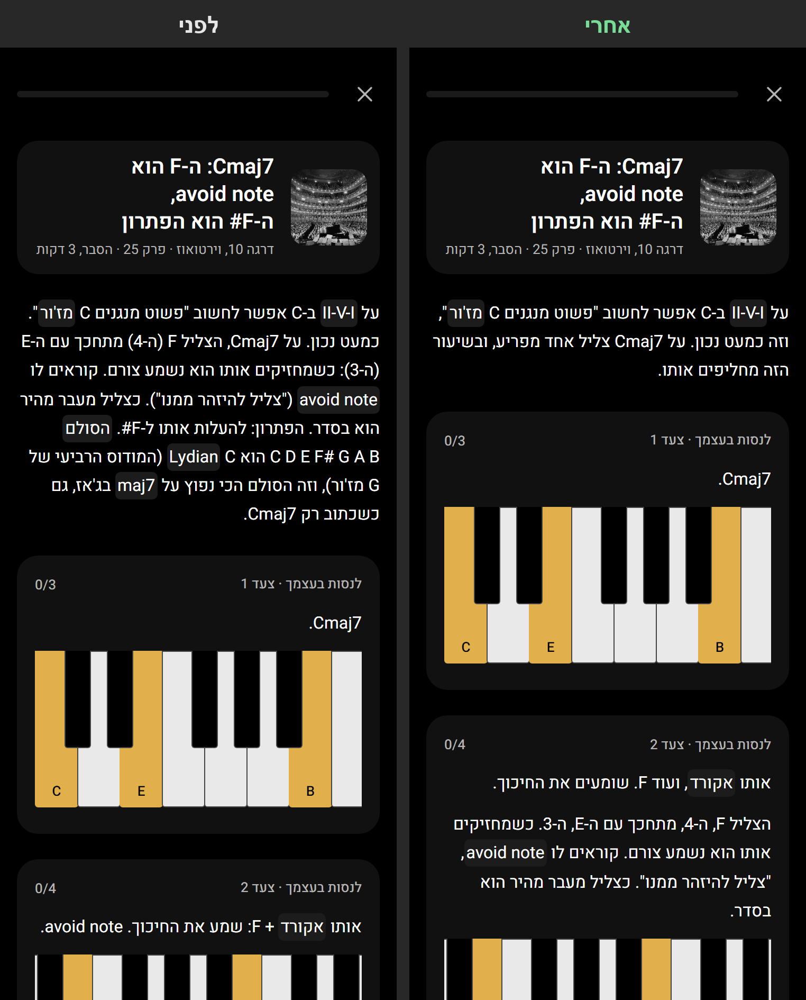
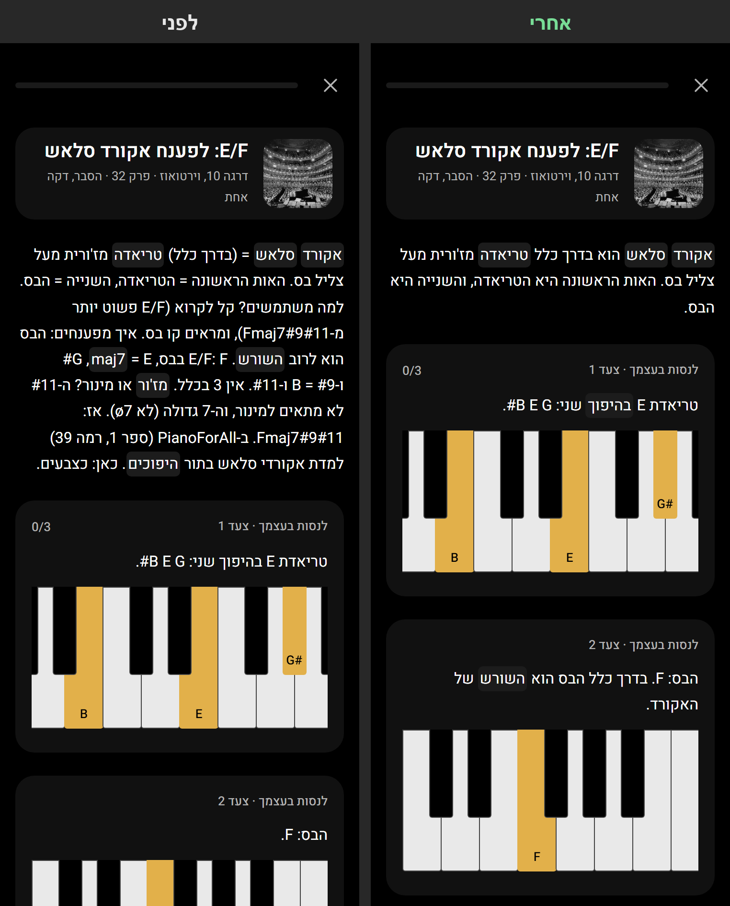
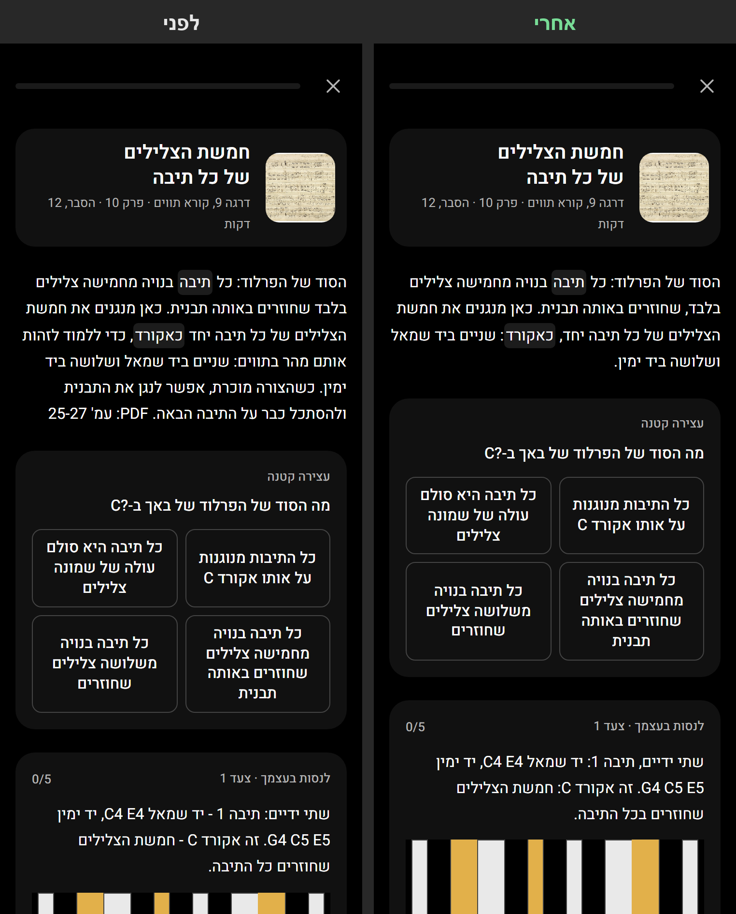

שכתוב לפי המועצה · ניסוי 2
הכלל החדש: כל הוראה יושבת ליד המקלדת שמשתמשת בה. הפתיחה עד 2–3 משפטים. 15 שיעורים, כולל ג'אז ובאך. אחרי מימין, לפני משמאל.
ארבעת האקורדים הראשונים
הפתיחה: 2 משפטים. האצבוע ו-root position עברו לצעד 1, מעל המקלדת. ה"טופר" מוסבר בסוף.

הקווים והרווחים
מפתח סול ומפתח פה בצעד 1. כל משפט זיכרון מופיע שלם, בצעד שבו הוא מתחיל. משכי התווים בסוף. (השיעור הזה צריך תמונה של חמשה: סימנתי לעיצוב.)

הקלידים הלבנים והשחורים
המטרה עכשיו בהתחלה. השמות של השחורים עברו לצעד 11, הצעד הראשון עם קליד שחור.

תו שמאל, אקורד ימין
האצבוע של יד שמאל עבר לצעדים: בכל צעד האצבע שלו, וגם האפשרות השנייה.

משפחת C
הצורה של האקורד בצעד 1. טריק הזיכרון (DEAD) בסוף, עם הסיכום.

ג׳אז: 9, 11, 13
שיעור קשה. ההסבר למה 9 ולא 2 נשאר בפתיחה (יש עליו שאלה מיד בהתחלה). השאר עבר לצעדים.

ג׳אז: Cmaj7 ו-C Lydian
ההסבר על avoid note עבר לצעד 2, בדיוק כשמנגנים את הצליל הצורם.

ג׳אז: אקורד סלאש E/F
הפענוח עבר לצעד 3, כשמנגנים את האקורד. האזכור של PianoForAll נמחק.

באך, פרלוד ב-C
35 צעדים, אחד לכל תיבה. אותה תבנית בכולם, רק נקייה יותר. הטיפ לתרגול בסוף.
